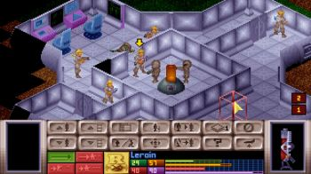

|

X-COM: Terror From The Deep (Ужас из глубин) — компьютерная стратегическая игра, разработанная и выпущенная американской компанией MicroProse в 1995 году. Это вторая часть серии X-COM и непосредственное продолжение X-COM: UFO Defense. В X-COM: Terror From The Deep игрок руководит международной организацией X-COM, противостоящей вторжению пришельцев. В отличие от предыдущей игры, в Terror From The Deep значительная часть действия происходит на море и под водой.
4 мая 2007 года Terror from the Deep был выпущен в Steam компанией 2K Games, которая унаследовала права на игру.
Игра была переиздана как часть издания X-COM (Collector’s Edition) от MicroProse в 1998 году, X-COM Collection от Hasbro Interactive в 1999 году, X-COM: Complete Pack от 2K Games в 2008 году и 2K Huge Games Pack в 2009 году.
Расы:
• Акватоид (Aquatoid) — классический «зеленый человечек», подводный аналог сектоидов из первой части игры. В поздних миссиях техники имеют ограниченную возможность молекулярного контроля. Слабый/средний (в случае наличия MC-способного лидера) противник.
• Гиллмэн (Gill Man) — зеленокожий представитель доисторической земной расы, согласившейся сотрудничать с инопланетянами в обмен на своё выживание.Командующие владеют молекулярным контролем. Слабый противник.
• Лобстермэн (Lobster Man) — омар ростом с человека, передвигающийся на задних конечностях. Панцирь очень устойчив ко всем видам стрелкового оружия. Опасный противник.
• Тасот (Tasoth) — быстрое и живучее существо, напоминающее помесь ящерицы, динозавра и угря. Вся раса имеет возможность молекулярного контроля. Умный и опасный противник.
Террористические юниты:
• Глубинник (Deep One) — белый гуманоид с хоботом. Плюётся по параболе. Его плевки практически безопасны для тех, на ком надета броня, но для людей без брони он смертелен. Сопровождает Gill Man’ов в наземных миссиях террора. Под водой встречается единственный раз — в финальной миссии. Умеренный по опасности противник.
• Биодрон (Bio-Drone) — аналог кибердиска из UFO Defence, но меньше (занимает одну клетку вместо четырёх). Взрывается при уничтожении. Сопровождает наземных миссиях как лобстеров, так и тасотов. Опасный противник.
• Кальцинит (Calcinite) — аморфное существо в водолазном снаряжении. Атакует только в ближнем бою, но очень сильно. Сопровождает акватоидов в наземных миссиях. Средний противник.
• Халлюциноид (Hallucinoid) — огромная медуза. Представляет опасность вблизи. Встречается на вражеских базах и на сбитом корабле акватоидов с миссией Alien Surface Attack (Атаки на города, острова, корабли).
• Зарквид (Xarquid) — Наутилус гипертрофированых размеров, самый редкий вид инопланетян. Встречается на баттлшипе вместе с Гиллменами.
• Трисцен (Triscene) — своеобразный гибрид Жнеца и Сектопода из первой части. Атакует как в ближнем, так и в дальнем бою. Обладает особой прочностью среди всех инопланетян. Большой доисторический хищник. Уничтожается только гранатами. Встречается также очень редко, обычно в миссиях террора на кораблях вместе с тасотами.
• Тентакулат (Tentaculat) — живой мозг со щупальцами, аналог крисалида из первой части, умеет плавать. Встречается только под водой и обладает очень большим полем зрения. Атакуя солдата, превращает его в зомби, из которого после убийства вылупляется ещё один тентакулат. Встречается на вражеских базах и подводных миссиях(сбитых «тарелках»). В наземных миссиях террора не участвует, поэтому не имеет возможности превращать в зомби мирных жителей, в отличие от криссалида из первой части, который мог подобной деятельностью серьёзно осложнить игроку миссию.
|